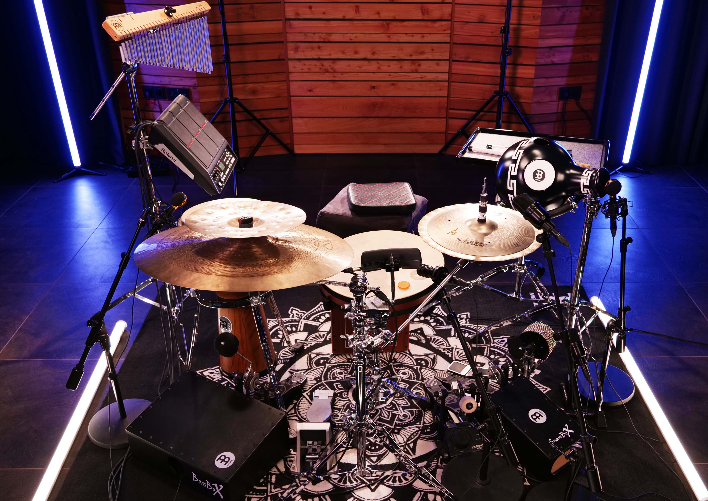

Hybrid Setup Unterricht:
Jugendliche und Fortgeschrittene
Jugendliche und fortgeschrittene Schüler profitieren von Santino Scavellis tiefem Verständnis für hybride Setups, das er an der Popakademie und durch direkte Lernbeziehungen mit Musikern aus verschiedenen Kulturen entwickelt hat. Die Schüler lernen, wie sie traditionelle Rhythmen und moderne Musikstile kombinieren können. Santino zeigt ihnen einzigartige Wege, um Percussion und Schlagzeug in Band-Settings zu verwenden und dadurch ein reicheres, kulturell vielfältiges Musikerlebnis zu schaffen.
Maßgeschneiderter Unterricht
Der Hybrid Setup Unterricht bei Santino Scavelli ist auf die Bedürfnisse jedes Schülers abgestimmt. Technische Fertigkeiten, musikalische Interpretation und Kreativität stehen im Mittelpunkt. Santinos umfassende Ausbildung und seine Fähigkeit, Brücken zwischen verschiedenen Musikkulturen zu schlagen, bieten den Schülern eine einzigartige und bereichernde Lernerfahrung.
Warum Santino Scavelli?
Santino Scavelli bringt durch seine Ausbildung an der Popakademie und seine italienische Herkunft, die von afrikanischen, orientalischen und europäischen Einflüssen geprägt ist, eine einzigartige Perspektive in den Unterricht ein. Seine tiefe Kenntnis von hybriden Setups, verbunden mit praktischer Erfahrung und Auszeichnungen wie dem Meinl Outstanding Performance Award 2023, machen ihn zu einem herausragenden Lehrer. Er vermittelt sowohl technische Präzision als auch kulturelles Verständnis und fördert das eigenständige Spiel sowie die kreative Vermischung musikalischer Traditionen.
Erleben Sie die Welt der hybriden Setups und lassen Sie sich von einem erfahrenen Musiker und Lehrer inspirieren. Buchen Sie jetzt Ihre erste Stunde und entdecken Sie Ihre Leidenschaft für Rhythmus und Musik.

{kind=link}